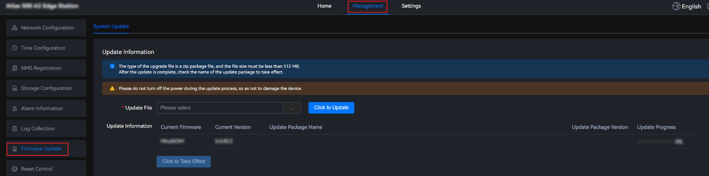
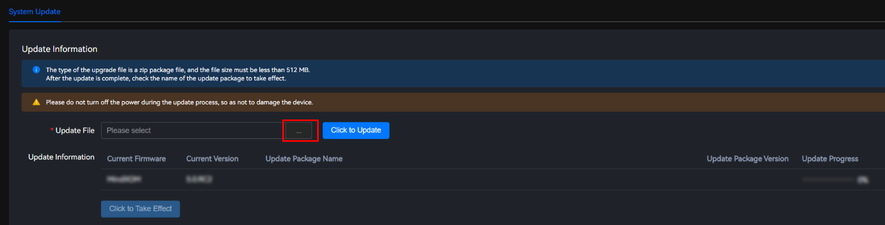
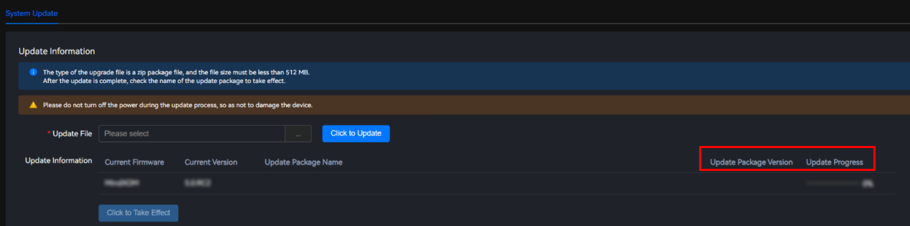
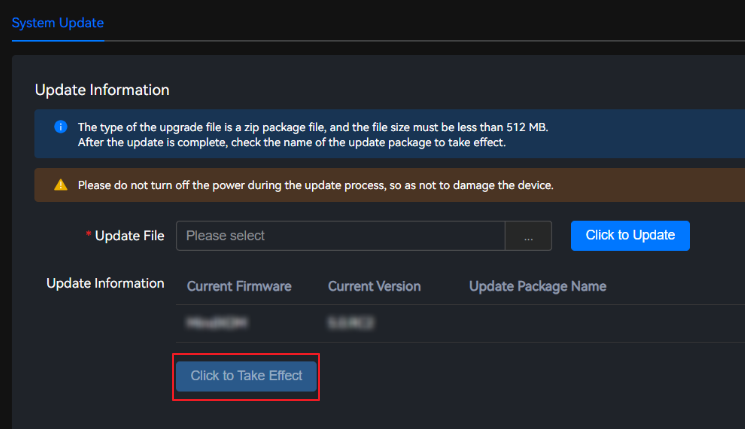

Scenarios
To optimize or enhance features, you can update the firmware of the new version to the Atlas IES to ensure that the system works in the optimal state.
Figure 1 shows the firmware update process.
Process Description
- Obtain the software package. Obtain the software package of the target version.
- Log in to the Atlas IES. Perform the update on the Atlas IES WebUI.
- Check the alarms. Choose Management > Alarm Information > Current Alarms from the main menu to check whether there are alarms that need to be handled on the current device. This prevents update failures caused by environment problems.
- Upload the software package. Upload the software package to be upgraded. Two update scenarios are supported. That is, one software package takes effect immediately after being uploaded and three software packages take effect manually after being uploaded. The two scenarios do not cause any difference. You can select a scenario as needed.
- Verify the update. Choose to view the version after the update.
Procedure
- Choose Management > Firmware Update > System Update.Figure 2 System Firmware
 - Click
 on the right of Update File, and select an update file.Figure 3 Selecting an update file
on the right of Update File, and select an update file.Figure 3 Selecting an update file

- The file name contains 1 to 255 characters, including letters, digits, underscores (_), dots (.), and hyphens (-).
- Do not close the current page or switch to another page during the upload process. Otherwise, the upload will fail.
- The upgrade file can be a .zip package of the MCU, NPU, or firmware. The file size must be less than 512 MB.
- Click Click to Update. The upgrade takes about two minutes.

- Do not power off the device during the update process. Otherwise, the device may be damaged.
- During the update, do not configure services or perform other maintenance operations for the Atlas 500 A2 edge station. Otherwise, the configuration may be lost or the update may fail.
You can view the upgrade package name, version number, and upgrade progress in the Update Information area.
Figure 4 Viewing update information
 - Click Click to Take Effect. A confirmation dialog box is displayed.Figure 5 Click to Take Effect
 - Click Confirm. The system restart takes about three minutes.
After the update package takes effect, the system restarts automatically. The login page is displayed, and the system is restarting. After waiting for some time, log in to the system and check whether the update is successful.
After the firmware is updated, refresh the browser or clear the cache before logging in to the Atlas IES. Otherwise, the page may not be completely loaded due to the browser cache problem.